◆「復刻 聖誕節2019Pick Up召喚(每日交替)」期間◆
期間:2020年10月23日(五) 17:00～11月6日(五) 11:59
舉辦期間限定「復刻 聖誕節2019Pick Up召喚(每日交替)」！
變更在2019年舉辦的「聖誕節2019Pick Up召喚(每日交替)」一部份內容進行復刻。
本次是從期間限定活動「復刻:聖誕節2019 南丁格爾的聖誕頌 輕量版」關聯從者之中，下述的從者Pick Up！
▼期間限定從者
【每日交替Pick Up】
・★5(SSR)阿斯托爾福(Saber)
▼Pick Up從者
【每日交替Pick Up】
・★5(SSR)布拉達曼特
・★5(SSR)南丁格爾(Berserker)
・★4(SR)馬嘶
・★4(SR)阿斯托爾福(Rider)
・★4(SR)童謠
【常駐Pick Up】
・★3(R)蓋烏斯・尤利烏斯・凱撒
・★3(R)大流士三世
並且，2019年的「聖誕節2019Pick Up召喚(每日交替)」中登場的下述的期間限定概念禮裝常駐Pick Up！
【常駐Pick Up】
・★5(SSR)乙女たちの午餐会
・★4(SR)想いの配達人
・★3(R)ウィズ・マイ・ファミリー
裝備上述3種概念禮裝的話，在期間限定活動「復刻:聖誕節2019 南丁格爾的聖誕頌 輕量版」中會提升活動道具的掉落獲得數。
Pick Up期間中，Pick Up對象從者與概念禮裝的出現機率提升！
詳情請在聖晶石召喚畫面左下的召喚詳細確認。
11次召喚中確定1張★4(SR)以上和確定1位★3(R)以上的從者！ ※確定★4(SR)以上包含從者和概念禮裝。
◆有關從者的注意◆
※請注意本召喚做為每日交替，下述的從者就算舉辦期間中也有不會被抽出來的日子。
・★5(SSR)阿斯托爾福(Saber)
・★4(SR)馬嘶
※下述的從者在Pick Up期間結束後不會追加到故事召喚。
・★5(SSR)阿斯托爾福(Saber)
※本召喚的Pick Up期間中，透過故事進行所追加的下述從者就算通過各章前也能入手。
・★4(SR)馬嘶
※下述的從者在Pick Up期間結束後仍會在故事召喚被抽出。
・★5(SSR)布拉達曼特
・★5(SSR)南丁格爾(Berserker)
・★4(SR)馬嘶
・★4(SR)阿斯托爾福(Rider)
・★4(SR)童謠
・★3(R)蓋烏斯・尤利烏斯・凱撒
・★3(R)大流士三世
◆有關概念禮裝的注意◆
※下述的概念禮裝，Pick Up期間中能靠友情點數召喚獲得。
・★3(R)ウィズ・マイ・ファミリー
※請注意在自動變還設定登錄★3(R)概念禮裝的情況，下述的概念禮裝會是自動變還的對象。
・★3(R)ウィズ・マイ・ファミリー
◆「復刻 聖誕節2019Pick Up召喚(每日交替)」Pick Up內容◆
| Pick Up期間 | Pick Up內容 | |
|---|---|---|
| 每日交替Pick Up | 全天Pick Up | |
| 10/23(五) 17:00～ 10/24(六) 22:59 |
★5 阿斯托爾福(Saber) ★4 馬嘶 ★4 阿斯托爾福(Rider) ★4 童謠 |
★3 蓋烏斯・尤利烏斯・凱撒 ★3 大流士三世 |
| 10/24(六) 23:00～10/25(日) 22:59 |
★5 布拉達曼特 ★4 馬嘶 ★4 阿斯托爾福(Rider) ★4 童謠 |
|
| 10/25(日) 23:00～10/26(一) 22:59 |
★5 南丁格爾(Berserker) ★4 馬嘶 ★4 阿斯托爾福(Rider) ★4 童謠 |
|
| 10/26(一) 23:00～10/27(二) 22:59 |
★5 阿斯托爾福(Saber) ★5 布拉達曼特 ★4 馬嘶 ★4 阿斯托爾福(Rider) ★4 童謠 |
|
| 10/27(二) 23:00～10/28(三) 22:59 |
★5 阿斯托爾福(Saber) ★5 南丁格爾(Berserker) ★4 馬嘶 ★4 阿斯托爾福(Rider) ★4 童謠 |
|
| 10/28(三) 23:00～10/29(四) 22:59 |
★5 阿斯托爾福(Saber) ★4 馬嘶 |
|
| 10/29(四) 23:00～10/30(五) 22:59 |
★5 阿斯托爾福(Saber) ★4 阿斯托爾福(Rider) |
|
| 10/30(五) 23:00～10/31(六) 22:59 |
★5 阿斯托爾福(Saber) ★4 童謠 |
|
| 10/31(六) 23:00～11/1(日) 22:59 |
★5 阿斯托爾福(Saber) ★4 馬嘶 ★4 阿斯托爾福(Rider) ★4 童謠 |
|
| 11/1(日) 23:00～11/2(一) 22:59 |
★5 布拉達曼特 ★4 馬嘶 ★4 阿斯托爾福(Rider) ★4 童謠 |
|
| 11/2(一) 23:00～11/3(二) 22:59 |
★5 南丁格爾(Berserker) ★4 馬嘶 ★4 阿斯托爾福(Rider) ★4 童謠 |
|
| 11/3(二) 23:00～11/4(三) 22:59 |
★5 阿斯托爾福(Saber) ★5 布拉達曼特 ★4 馬嘶 ★4 阿斯托爾福(Rider) ★4 童謠 |
|
| 11/4(三) 23:00～11/5(四) 22:59 |
★5 阿斯托爾福(Saber) ★5 南丁格爾(Berserker) ★4 馬嘶 ★4 阿斯托爾福(Rider) ★4 童謠 |
|
| 11/5(四) 23:00～11/6(五) 11:59 |
★5 阿斯托爾福(Saber) ★4 馬嘶 ★4 阿斯托爾福(Rider) ★4 童謠 |
|
※請注意會以每日交替變更Pick Up的從者。
 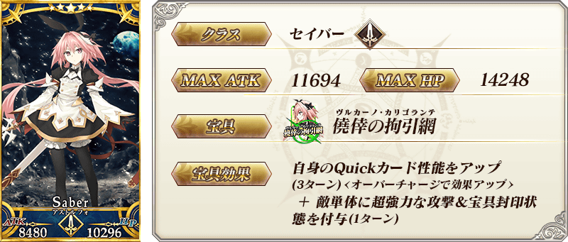
※上述「★5(SSR)阿斯托爾福(Saber)」的卡面為靈基再臨第3階段。
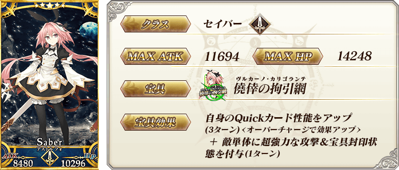
※上述「★5(SSR)阿斯托爾福(Saber)」的卡面為靈基再臨第3階段。

 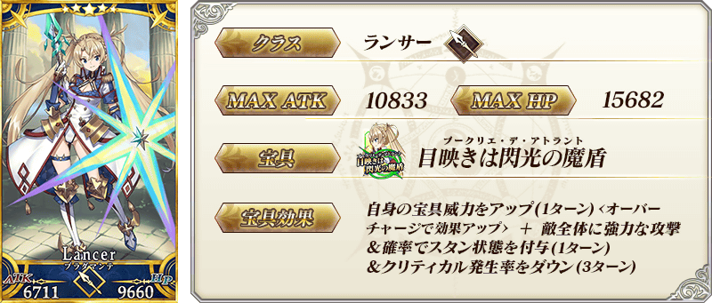
※上述「★5(SSR)布拉達曼特」的卡面為靈基再臨第2階段。
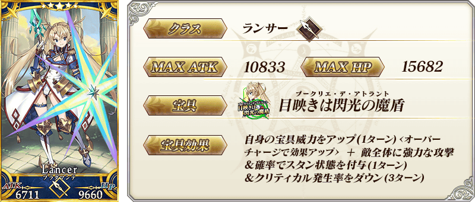
※上述「★5(SSR)布拉達曼特」的卡面為靈基再臨第2階段。
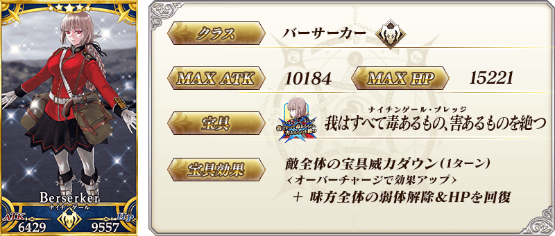 ※上述「★5(SSR)南丁格爾(Berserker)」的卡面為靈基再臨第2階段。

 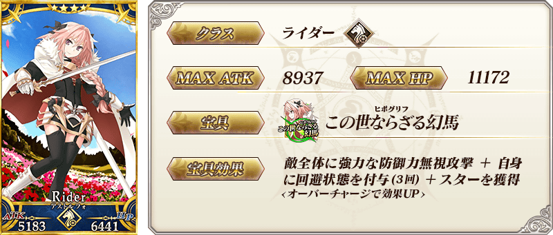
※上述「★4(SR)阿斯托爾福(Rider)」的卡面為靈基再臨第2階段。
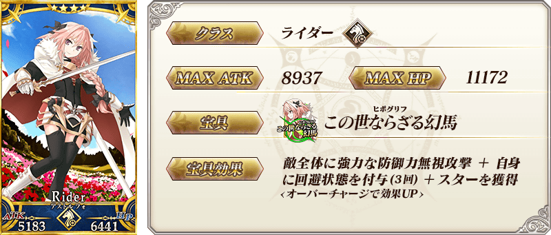
※上述「★4(SR)阿斯托爾福(Rider)」的卡面為靈基再臨第2階段。

 ※上述「★4(SR)童謠」的卡面為靈基再臨第2階段。
※上述「★4(SR)童謠」的卡面為靈基再臨第2階段。
 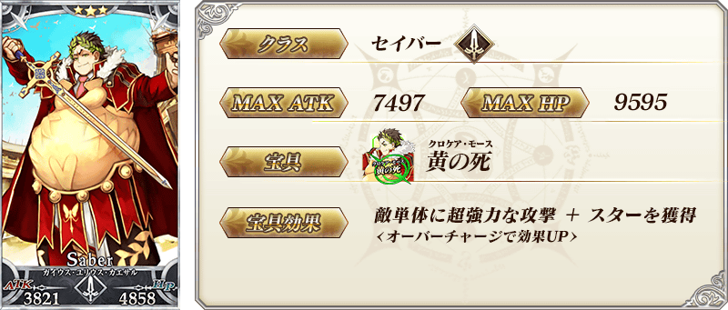
※上述「★3(R)蓋烏斯・尤利烏斯・凱撒」的卡面為靈基再臨第2階段。
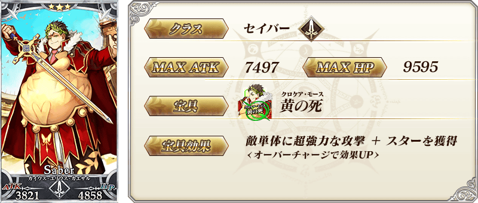
※上述「★3(R)蓋烏斯・尤利烏斯・凱撒」的卡面為靈基再臨第2階段。

 ※上述「★3(R)大流士三世」的卡面為靈基再臨第2階段。
※上述「★3(R)大流士三世」的卡面為靈基再臨第2階段。

|
★★★★★SSR
|


|
★★★★SR
|


|
★★★R |
 ※上述「★5(SSR)阿斯托爾福(Saber)」的立繪為靈基再臨第3階段。
※上述「★5(SSR)阿斯托爾福(Saber)」的立繪為靈基再臨第3階段。
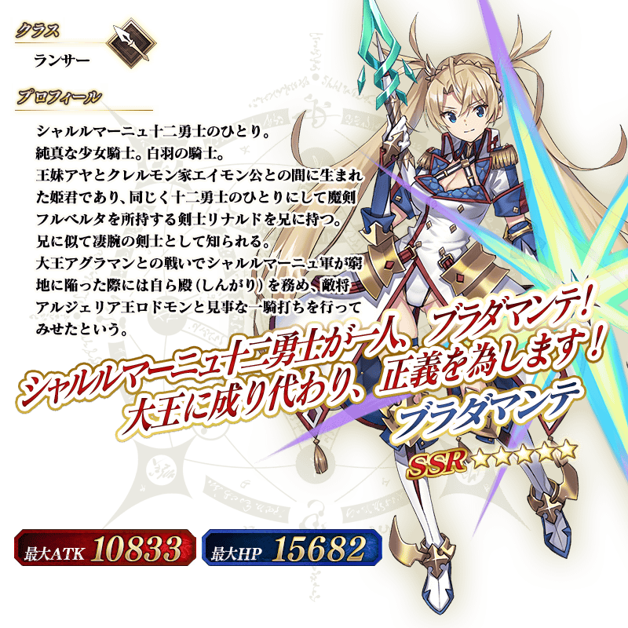 ※上述「★5(SSR)布拉達曼特」的立繪為靈基再臨第2階段。
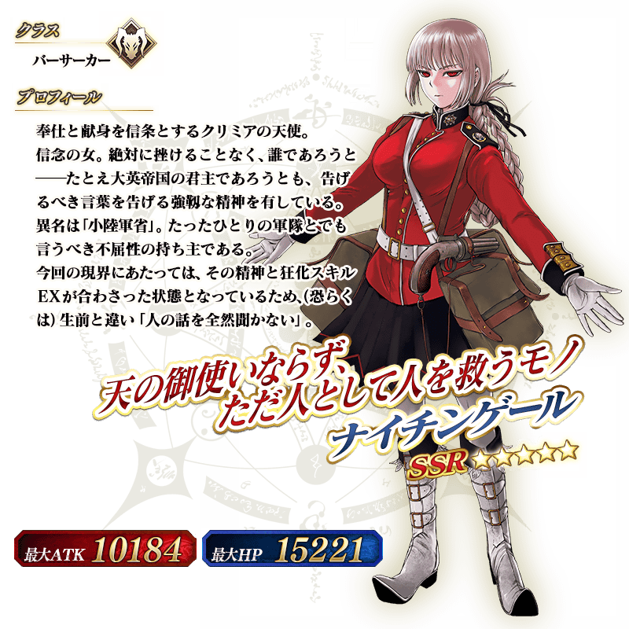 ※上述「★5(SSR)南丁格爾(Berserker)」的立繪為靈基再臨第2階段。
介紹在本召喚Pick Up的6位從者寶具演出！
在「Fate/Grand Order」官方網站內的公告中，以影片公開寶具演出，敬請確認。
【★5(SSR)阿斯托爾福(Saber)】
【★5(SSR)布拉達曼特】
【★5(SSR)南丁格爾(Berserker)】
【★4(SR)馬嘶】
【★4(SR)阿斯托爾福(Rider)】
【★4(SR)童謠】
其他還有，期間限定活動「復刻:聖誕節2019 南丁格爾的聖誕頌 輕量版」同時舉辦！
關於詳情，請自下述橫幅確認。
■「復刻:聖誕節2019 南丁格爾的聖誕頌 輕量版」詳細情報 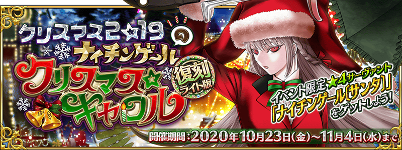